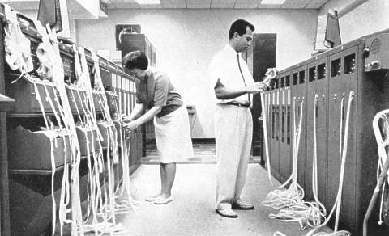

A commonly asked question in the R community is:
How can I parallelize the following for-loop?
The answer almost always involves rewriting the for (...) { ... } loop into something that looks like a y <- lapply(...) call. If you can achieve that, you can parallelize it via for instance y <- future.apply::future_lapply(...) or y <- foreach::foreach() %dopar% { ... }.
For some for-loops it is straightforward to rewrite the code to make use of lapply() instead, whereas in other cases it can be a bit more complicated, especially if the for-loop updates multiple variables in each iteration. However, as long as the algorithm behind the for-loop is embarrassingly parallel, it can be done. Whether it should be parallelized in the first place, or it’s worth parallelizing it, is a whole other discussion.
Below are a few walk-through examples on how to transform a for-loop into an lapply call.

Run your loops in parallel.
Example 1: A well-behaving for-loop
I will use very simple function calls throughout the examples, e.g. sqrt(x). For these code snippets to make sense, let us pretend that those functions take a long time to finish and by parallelizing multiple such calls we will shorten the overall processing time.
First, consider the following example:
X <- 1:5
y <- list()
for (ii in seq_along(X)) {
x <- X[[ii]]
tmp <- sqrt(x) ## Assume this takes a long time
y[[ii]] <- tmp
}When run, this will give us the following result:
> str(y)
List of 5
$ : num 1
$ : num 1.41
$ : num 1.73
$ : num 2
$ : num 2.24Because the result of each iteration in the for-loop is a single value (variable tmp) it is straightforward to turn this for-loop into an lapply call. I’ll first show a version that resembles the original for-loop as far as possible, with one minor but important change. I’ll wrap up the “iteration” code inside local() to make sure it is evaluated in a local environment in order to prevent it from assigning values to the global environment. It is only the “result” of local() call that I will allow updating y. Here we go:
y <- list()
for (ii in seq_along(X)) {
y[[ii]] <- local({
x <- X[[ii]]
tmp <- sqrt(x)
tmp ## same as return(tmp)
})
}By making these, apparently, small adjustments, we lower the risk for missing some critical side effects that may be used in some for-loops. If those exists and we miss to adjust for them, then the for-loop is likely to give the wrong results.
If this syntax is unfamiliar to you, run it first to convince yourself that it works. How does it work? The code inside local() will be evaluated in a local environment and it is only its last value (here tmp) that will be returned. It is also neat that x, tmp, and any other created variables, will not clutter up the global environment. Instead, they will vanish after each iteration just like local variables used inside functions. Retry the above after rm(x, tmp) to see that this is really the case.
Now we’re in a really good position to turn the for-loop into an lapply call. To share my train of thought, I’ll start by showing how to do it in a way that best resembles the latter for-loop;
y <- lapply(seq_along(X), function(ii) {
x <- X[[ii]]
tmp <- sqrt(x)
tmp
})Just like the for-loop with local(), it is the last value (here tmp) that is returned, and everything is evaluated in a local environment, e.g. variable tmp will not show up in our global environment.
There is one more update that we can do, namely instead of passing the index ii as an argument and then extract element x <- X[[ii]] inside the function, we can pass that element directly using:
y <- lapply(X, function(x) {
tmp <- sqrt(x)
tmp
})If we get this far and have confirmed that we get the expected results, then we’re home.
From here, there are few ways to parallelize the lapply call. The parallel package provides the commonly known mclapply() and parLapply() functions, which are found in many examples and inside several R packages. As the author of the future package, I claim that your life as a developer will be a bit easier if you instead use the future framework. It will also bring more power and options to the end user. Below are a few options for parallelization.
future.apply::future_lapply()
The parallelization update that takes the least amount of changes is provided by the future.apply package. All we have to do is to replace lapply() with future_lapply():
library(future.apply)
plan(multisession) ## => parallelize on your local computer
X <- 1:5
y <- future_lapply(X, function(x) {
tmp <- sqrt(x)
tmp
})and we’re done.
foreach::foreach() %dopar% { … }
If we wish to use the foreach framework, we can do:
library(doFuture)
registerDoFuture()
plan(multisession)
X <- 1:5
y <- foreach(x = X) %dopar% {
tmp <- sqrt(x)
tmp
}Here I choose the doFuture adaptor because it provides us with access to the future framework and the full range of parallel backends that comes with it (controlled via plan()).
If there is only one thing you should remember from this post, it is the following:
It is a common misconception that foreach() works like a regular for-loop. It is doesn’t! Instead, think of it as a version of lapply() with a few bells and whistles and always make sure to use it as y <- foreach(...) %dopar% { ... }.
To clarify further, the following is not (I repeat: not) a working solution:
X <- 1:5
y <- list()
foreach(x = X) %dopar% {
tmp <- sqrt(x)
y[[ii]] <- tmp
}No, it isn’t.
Additional parallelization options
There are several more options available, which are conceptually very similar to the above lapply-like approaches, e.g. y <- furrr::future_map(X, ...), y <- plyr::llply(X, ..., .parallel = TRUE) or y <- BiocParallel::bplapply(X, ..., BPPARAM = DoparParam()). For also the latter two to parallelize via one of the many future backends, we need to set doFuture::registerDoFuture(). See also my blog post The Many-Faced Future.
Example 2: A slightly complicated for-loop
Now, what do we do if the for-loop writes multiple results in each iteration? For example,
X <- 1:5
y <- list()
z <- list()
for (ii in seq_along(X)) {
x <- X[[ii]]
tmp1 <- sqrt(x)
y[[ii]] <- tmp1
tmp2 <- x^2
z[[ii]] <- tmp2
}The way to turn this into an lapply call, is to rewrite the code by gathering all the results at the very end of the iteration and then put them into a list;
X <- 1:5
yz <- list()
for (ii in seq_along(X)) {
x <- X[[ii]]
tmp1 <- sqrt(x)
tmp2 <- x^2
yz[[ii]] <- list(y = tmp1, z = tmp2)
}This one we know how to rewrite;
yz <- lapply(X, function(x) {
tmp1 <- sqrt(x)
tmp2 <- x^2
list(y = tmp1, z = tmp2)
})which we in turn can parallelize with one of the above approaches.
The only difference from the original for-loop is that the ‘y’ and ‘z’ results are no longer in two separate lists. This makes it a bit harder to get a hold of the two elements. In some cases, then downstream code can work with the new yz format as is but if not, we can always do:
y <- lapply(yz, function(t) t$y)
z <- lapply(yz, function(t) t$z)
rm(yz)Example 3: A somewhat complicated for-loop
Another, somewhat complicated, for-loop is when, say, one column of a matrix is updated per iteration. For example,
X <- 1:5
Y <- matrix(0, nrow = 2, ncol = length(X))
rownames(Y) <- c("sqrt", "square")
for (ii in seq_along(X)) {
x <- X[[ii]]
Y[, ii] <- c(sqrt(x), x^2) ## assume this takes a long time
}which gives
> Y
[,1] [,2] [,3] [,4] [,5]
sqrt 1 1.414214 1.732051 2 2.236068
square 1 4.000000 9.000000 16 25.000000To turn this into an lapply call, the approach is the same as in Example 2 - we rewrite the for-loop to assign to a list and only afterward we worry about putting those values into a matrix. To keep it simple, this can be done using something like:
X <- 1:5
tmp <- lapply(X, function(x) {
c(sqrt(x), x^2) ## assume this takes a long time
})
Y <- matrix(0, nrow = 2, ncol = length(X))
rownames(Y) <- c("sqrt", "square")
for (ii in seq_along(tmp)) {
Y[, ii] <- tmp[[ii]]
}
rm(tmp)To parallelize this, all we have to do is to rewrite the lapply call as:
tmp <- future_lapply(X, function(x) {
c(sqrt(x), x^2)
})Example 4: A non-embarrassingly parallel for-loop
Now, if our for-loop is such that one iteration depends on the previous iterations, things becomes much more complicated. For example,
X <- 1:5
y <- list()
y[[1]] <- 1
for (ii in 2:length(X)) {
x <- X[[ii]]
tmp <- sqrt(x)
y[[ii]] <- y[[ii - 1]] + tmp
}does not use an embarrassingly parallel for-loop. This code cannot be rewritten as an lapply call and therefore it cannot be parallelized.
Summary
To parallelize a for-loop:
- Rewrite your for-loop such that each iteration is done inside a
local()call (most of the work is done here) - Rewrite this new for-loop as an lapply call (straightforward)
- Replace the lapply call with a parallel implementation of your choice (straightforward)
Happy futuring!
See also
- Maintenance Updates of Future Backends and doFuture, 2019-01-07
- future 1.9.0 - Output from The Future, 2018-07-23
- future.apply - Parallelize Any Base R Apply Function, 2018-06-23
- Delayed Future(Slides from eRum 2018), 2018-06-19
- future 1.8.0: Preparing for a Shiny Future, 2018-04-12
- The Many-Faced Future, 2017-06-05
- future 1.3.0: Reproducible RNGs, future_lapply() and More, 2017-02-19
- High-Performance Compute in R Using Futures, 2016-10-22
- Remote Processing Using Futures, 2016-10-11
- A Future for R: Slides from useR 2016, 2016-07-02
Appendix
A regular for-loop with future::future()
In order to lower the risk for mistakes, and because I think the for-loop-to-lapply approach is the one that the works out of the box in the most cases, I decided to not mention the following approach in the main text above, but if you’re interested, here it is. With the core building blocks of the Future API, we can actually do parallel processing using a regular for-loop. Have a look at that second code snippet in Example 1 where we use a for-loop together with local(). All we need to do is to replace local() with future() and make sure to “collect” the values after the for-loop;
library(future)
plan(multisession)
X <- 1:5
y <- list()
for (ii in seq_along(X)) {
y[[ii]] <- future({
x <- X[[ii]]
tmp <- sqrt(x)
tmp
})
}
y <- values(y) ## collect valuesNote that this approach does not perform load balancing*. That is, contrary to the above mentioned lapply-like options, it will not chunk up the elements in X into equally-sized portions for each parallel worker to process. Instead, it will call each worker multiple times, which can bring some significant overhead, especially if there are many elements to iterate over.
However, one neat feature of this bare-bones approach is that we have full control of the iteration. For instance, we can initiate each iteration using a bit of sequential code before we use parallel code. This can be particularly useful for subsetting large objects to avoid passing them to each worker, which otherwise can be costly. For example, we can rewrite the above as:
library(future)
plan(multisession)
X <- 1:5
y <- list()
for (ii in seq_along(X)) {
x <- X[[ii]]
y[[ii]] <- future({
tmp <- sqrt(x)
tmp
})
}
y <- values(y)This is just one example. I’ve run into several other use cases in my large-scale genomics research, where I found it extremely useful to be able to perform the beginning of an iteration sequentially in the main processes before passing on the remaining part to be processed in parallel by the workers.
(*) I do have some ideas on how to get the above code snippet to do automatic workload balancing “under the hood”, but that is quite far into the future of the future framework.
UPDATE 2022-12-11: Update examples that used the deprecated multiprocess future backend alias to use the multisession backend.